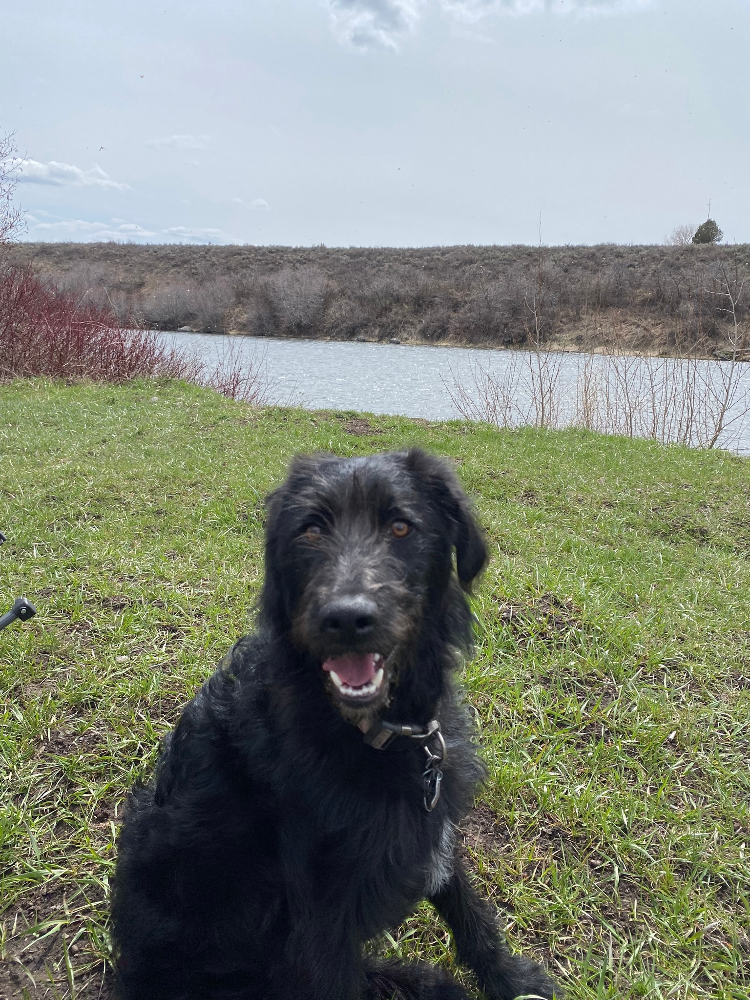

Rocky: The Border Collie/Poodle Mix
Baby Announcement Helper: Rocky plays a special role in our family, helping us announce the exciting news of our baby. With his wagging tail and a custom bandana, he proudly shows the world he’s ready to be the best big brother.

A Companion Since Day One: Rocky has been with us since we got married, making every moment more joyful. From the early days as newlyweds to now, he’s been a constant source of love and laughter in our home.
Outdoor Adventure Buddy: Rocky thrives on outdoor adventures, whether it’s hiking through the woods or joining us on fishing trips. He eagerly explores every trail and stream, always bringing energy and excitement to every outing.